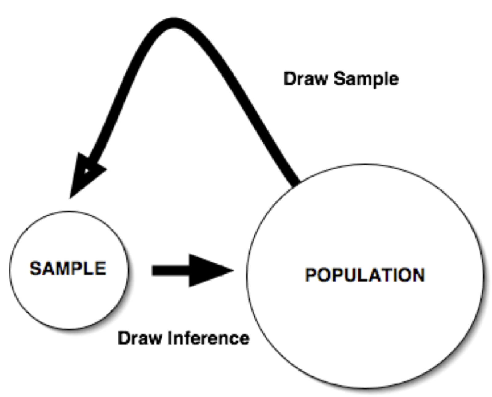

PSYC422 Lecture 2
Power, bias and research ethics - how to be a better researcher (Part I)
Outline
- Types of research questions and types of bias
- Brief intro to hypothesis testing, power and effect sizes
- Issues in research and publication Part I: The Problem
- Issues in research and publication Part II: The Solutions? (Lecture 3 - stay tuned!)
Types of research question
- Existence
- Description/classification
- Composition
- Descriptive-comparative
- Relationship
- Causal
- Causal-comparative
- Causal-comparative interaction
Existence questions
- These can be important where something may be controversial
- Especially when a theory rests on the existence of x
- For example: Is there such a thing as the unconscious?
- Can animals use language?
- Is telepathy possible?
Description/classification questions
- These often come after existence questions
- What are the characteristics of X? Does it take on multiple values? What are its limits?
- E.g. what is the prevalence of anxiety among 4th-year Psychology students?
- Survey research tends to describe/count/classify
Composition questions
- E.g. what are the components of psychopathy or personality?
- What are the main factors of health that affect quality of life?
- Factor analysis can be used here
- Need to think about bias in this!
Descriptive-comparative questions
- Is group X different to group Y on something?
- Doesn’t have to be just 2 groups!
- Sway example - compare SPD to SZ and controls
- Are Australians happier than Americans?
- Be careful of measurement - construct validity, reliability, generalisability, third variable problem
Relationship questions
- Is there a relationship or association between X and Y?
- A special case of comparative question
- Can be simple associations (correlation)
- Or more complex (multiple regression)
- E.g. what variables are associated with anxiety in 4th year psychology students?
Causal questions
- Does x produce, lead to, or prevent changes in y?
- Don’t have to have a single cause and effect
- Can be exploratory (what are the consequences of x)?
- Ideally, use random assignment with control group
- E.g. does dance training improve balance in Parkinson’s patients?
Causal-comparative questions
- Does x cause more change in y than does z?
- E.g. are antidepressant drugs more effective in reducing depression than psychotherapy?
- E.g. does dance training improve balance in Parkinson’s better than tai chi?
- Same conditions as causal questions
Causal-comparative interaction questions
- Does IV have different causal effects depending on the level of the other IV/s?
- E.g. is coffee more effective in improving cognitive performance in the morning than the afternoon?
- Note that effect sizes of interactions are usually smaller.
Bias
Types of bias
- Sampling bias
- Observer bias
- Participant reactivity
- Non-response bias
- Social desirability bias
- Response acquiescence
- Leading/biased questions
- Publication bias
Brief recap on hypothesis testing and statistical power
- Logic of hypothesis testing
- Statistical Power
- Effect Size
- “We are trying to prove ourselves wrong as quickly as possible, because only in that way can we find progress.” – Richard Feynman
Logic of hypothesis testing

- In hypothesis testing, researchers use information from samples to draw conclusions about populations.
Steps in hypothesis testing
- Develop a hypothesis
- Sample the population
- Compute a test statistic for the sample (e.g., t, F, etc.)
- Compare the test statistic from your sample to an appropriate comparison distribution
- Make a decision about whether to retain or reject the null hypothesis
Importance of being wrong
Source: Nathan Pyle on Twitter
Decision errors in hypothesis testing
| Decision | Null is true | Null is false |
|---|---|---|
| Null is not rejected | Correct acceptance |
Type II error |
| Null is rejected | Type I error |
Correct rejection |
Type I error
- Rejecting the null hypothesis when it is true.
- For example, based on data from a sample, a researcher may conclude:
- Two variables are related when they are not related in the population.
- An experimental treatment has an effect on an outcome variable when in fact it does not.
Type II error
- Failing to reject the null hypothesis when it is false.
- For example, based on data from a sample, a researcher may conclude:
- Two variables are unrelated, when in fact they are
- A treatment is NOT effective, when in fact it is
Alpha (\(\alpha\))
- This is just the cut-off value that we set for deciding when to reject/accept the null
- Conventionally this is .05, but it doesn’t have to be!
- For instance, if we wanted to be more conservative, we might set \(\alpha = .01\)
- Or, if we want to be more liberal (for instance, in a small pilot sample), we might set \(\alpha = .10\)
Power
- The power of a statistical test represents the probability of correctly rejecting the null hypothesis.
- In mathematical terms, power can be defined as:
- \(1 –\beta\)
- where \(\beta\) is the probability of making a Type II error
- This is illustrated in the next slide!
Alpha, beta and power
Really good interactive demo here!
P-values don’t mean what you have been taught!!
- A recent study found that 89% of introductory Psychology textbooks contained incorrect explanations of p-values.
- (30 textbooks were studied but only 28 actually contained any definitions; of those, 25 contained wrong ones.)
- Correct definition: The proportion of test statistics that will be at least that extreme if the null hypothesis is true.
Cassidy, S. A. et al, (2019). Failing Grade: 89% of Introduction-to-Psychology Textbooks That Define or Explain Statistical Significance
Do So Incorrectly. Advances in Methods and Practices in Psychological Science, 2(3), 233–239. https://doi.org/10.1177/2515245919858072
Incorrect definitions
Common fallacies about p-values
Source: Stuart Ritchie on Twitter
Why is power important?
- If power is too low, you will have a high probability of making a Type 2 error (i.e., failing to reject a false null hypothesis).
- If power is too high, you might waste time and other resources by collecting data from more participants than you need.
- However, much better to have too much than too little!!
- For discussion: Is this an ethical issue?
Power analysis
- Power analysis is used to determine how many participants are needed in a study to have a good chance of finding an effect if it is there
- Information needed:
- Target power level (typically set at .80 but can be higher! )
- Critical alpha level (typically set at .05 but can be lower!)
- Expected effect size for your study (where possible, use published results)
Power analysis
- Numerous free online and downloadable programs that can be used to conduct power analyses
- Online Power Calculators:
- Power and Sample Size
- ANOVA Power (specifically for ANOVA designs)
- Downloadable program: G*Power3 (3.1.9.6)
Effect size
- An index that describes the strength of the relationship between two variables.
- There are several common indices of effect size used in psychological research (e.g., \(r\), \(d\), \(\eta^2\) , \(F\))
- There are some simple rules of thumb about these
- Caveat: There is some debate about this
Effect size types
| \(r\) | Interpretation |
|---|---|
| .10 | Small |
| .30 | Medium |
| .50 | Large |
| \(\eta^2\) | Interpretation |
|---|---|
| .01 | Small |
| .06 | Medium |
| .14 | Large |
| \(d\) | Interpretation |
|---|---|
| .20 | Small |
| .50 | Medium |
| .80 | Large |
| \(f\) | Interpretation |
|---|---|
| .1 | Small |
| .25 | Medium |
| .4 | Large |
Bias (again)
“The first principle is that you must not fool yourself and you are the easiest person to fool.” – Richard Feynman
Issues in research and publication
- Part I: The Problem
- Publication bias - the “File Drawer Problem”
- The replication crisis - is most published research false?
- Research ethics - Questionable research practices - how bad are they?
- Why the system perpetuates these problems (a different kind of power?)
Issues in research and publication
- Part II: Possible Solutions
- New models of publication and peer review
- The Reproducibility Project
- Open Science - issues and new initiatives
- Can we change the system?
Publication bias: Definition and history
- First termed “File Drawer Problem” by Rosenthal (1979) but recognised as a problem since at least 1959 (Sterling)
- Despite repeated hand-wringing over the years, publication bias still rampant
- Current publishing system is a major culprit

Current publishing system
- Dominated by “high impact factor” journals
- Emphasis on novelty, “exciting” and unexpected findings
- Peer review can be biased (and sometimes not present)
- Still a huge reluctance to publish null findings and replications (or non-replications)
Limitations of current practice
- Slowness and inefficiency
- Lack of transparency
- Low reliability
- Lack of incentives for reviewing
- Article here
Recent buzz
In cancer science, many “discoveries” don’t hold up
- C. Glenn Begley (former researcher at Amgen Inc) chose 53 “landmark” publications - from good labs, published in reputable journals
- Of these, 47 could not be replicated
- “We went through the paper line by line, figure by figure,” said Begley. “I explained that we re-did their experiment 50 times and never got their result. He said they’d done it six times and got this result once, but put it in the paper because it made the best story. It’s very disillusioning.”
- Article here
Are most published research findings false?
- John Ioannidis (2005)
- This paper made a big splash in 2005
- Cited 1,559 times (update 2016: 1886 citations) (further update 2023: 7017 citations)
- Argues that it can be shown most published findings are false, based on PPV (positive predictive value
Is that true?
- Much debate ensued
- For a good summary, see Hilda Bastian’s blog Absoutely Maybe
- Understanding PPV: Very good Shiny App here.
- General conclusion: We still have some cleaning up to do!
Do current publishing practices distort science?
| Economic Term | Meaning | Analogy in Scientific Publication |
|---|---|---|
| Winner’s curse | The winner in an auction tends on average to have overpaid, especially when no participant is sure exactly how valuable the item is. | Scientific studies try to find true relationships, but none are certain of what these relationships are exactly. Published articles, especially in very competitive journals, have on average exaggerated results. |
Do current publishing practices distort science?
| Economic Term | Meaning Analogy in Scientific Publication | |
|---|---|---|
| Oligopoly | A market where a few traders have the major share and each oligopolist has significant power to influence the market. | Very few journals with limited publication slots (compared with geometrically increasing scientific data that seek publication) determine highly visible science. |
Do current publishing practices distort science?
| Economic Term | Meaning | Analogy in Scientific Publication |
|---|---|---|
| Herding | Follow-the-leader behaviour: the actions of the first or dominant player supersede the individual information and actions of all the players in a market. | Scientists may uncritically follow paths of investigation that are popularised in prestigious publications, neglecting novel ideas and truly independent investigative paths. |
Do current publishing practices distort science?
| Economic Term | Meaning | Analogy in Scientific Publication |
|---|---|---|
| Artificial scarcity | Restrictions on the provision of a commodity above that expected from its production cost. | Print page limits excuse failure to accept articles; small number of major high-impact journals have limited slots; extremely low acceptance rates provide status signals to successful publications and their authors. |
Do current publishing practices distort science?
| Economic Term | Meaning | Analogy in Scientific Publication |
|---|---|---|
| Uncertainty | Situation where the real long-term value of a commodity is largely unpredictable. | For much (most?) scientific work, it is difficult or impossible to immediately predict future value, extensions, and practical applications |
Do current publishing practices distort science?
| Economic Term | Meaning | Analogy in Scientific Publication |
|---|---|---|
| Branding | Marking a product as valuable; of key importance when it is difficult to determine a product’s value prior to consuming it. | Publishing in selective journals provides evidence of value of a research result and its authors, independent of the manuscript’s content. |
Cautionary tale I: False-positive psyhchology
Simmons, J. P., Nelson, L. D., & Simonsohn, U. (2011). False-Positive Psychology: Undisclosed Flexibility in Data Collection and Analysis
Allows Presenting Anything as Significant. Psychological Science, 22(11), 1359–1366. https://doi.org/10.1177/0956797611417632
Cautionary tale I: False-positive psyhchology
- Argues that it’s easy to manipulate data to support any hypothesis
- Computer simulation
- Actual experiments
- “Chronological rejuvenation”
- Really?
Simmons, J. P., Nelson, L. D., & Simonsohn, U. (2011). False-Positive Psychology: Undisclosed Flexibility in Data Collection and Analysis
Allows Presenting Anything as Significant. Psychological Science, 22(11), 1359–1366. https://doi.org/10.1177/0956797611417632
Study 1
Does listening to a children’s song make you feel older?
- 30 participants were randomly assigned to listen to either a control song (“Kalimba”) or “Hot Potato” by the Wiggles
- Ostensibly unrelated survey: “How old do you feel right now” (very young, young, neither young nor old, old, and very old)
- Also reported father’s age (to control for baseline variations in age)
- ANCOVA showed people feel older after listening to “Hot Potato) (p = 0.033)
Simmons, J. P., Nelson, L. D., & Simonsohn, U. (2011). False-Positive Psychology: Undisclosed Flexibility in Data Collection and Analysis
Allows Presenting Anything as Significant. Psychological Science, 22(11), 1359–1366. https://doi.org/10.1177/0956797611417632
Study 2
Does listening to a song about older age make people actually younger??
- Conceptual replication; same method; participants listened to either “Kalimba” or “When I’m 64”
- Ostensibly unrelated survey; report age (mm/dd/yyyy) and father’s age
- ANCOVA: people were nearly 1.5 years younger after listening to “When I’m 64” (F(1, 17) = 4.92, p = .040)
- WTAF???
Simmons, J. P., Nelson, L. D., & Simonsohn, U. (2011). False-Positive Psychology: Undisclosed Flexibility in Data Collection and Analysis
Allows Presenting Anything as Significant. Psychological Science, 22(11), 1359–1366. https://doi.org/10.1177/0956797611417632
False positive psychology
Simmons, J. P., Nelson, L. D., & Simonsohn, U. (2011). False-Positive Psychology: Undisclosed Flexibility in Data Collection and Analysis
Allows Presenting Anything as Significant. Psychological Science, 22(11), 1359–1366. https://doi.org/10.1177/0956797611417632
Effect of “peeking”
Simmons, J. P., Nelson, L. D., & Simonsohn, U. (2011). False-Positive Psychology: Undisclosed Flexibility in Data Collection and Analysis
Allows Presenting Anything as Significant. Psychological Science, 22(11), 1359–1366. https://doi.org/10.1177/0956797611417632
Solutions (for reviewers)
- Reviewers should ensure that authors follow the requirements.
- Reviewers should be more tolerant of imperfections in results.
- Reviewers should require authors to demonstrate that their results do not hinge on arbitrary analytic decisions.
- If justifications of data collection or analysis are not compelling, reviewers should require the authors to conduct an exact replication.
Solutions (for authors)
- Authors must decide the rule for terminating data collection before data collection begins and report this rule in the article.
- Authors must collect at least 20 observations per cell or else provide a compelling cost-of-data-collection justification.
- Authors must list all variables collected in a study.
- Authors must report all experimental conditions, including failed manipulations.
- If observations are eliminated, authors must also report what the statistical results are if those observations are included.
- If an analysis includes a covariate, authors must report the statistical results of the analysis without the covariate.
Requirement-compliant version of study 2
Data are avaiable here